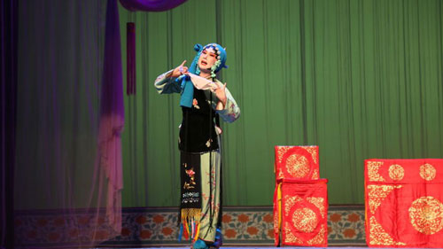

王二姐思夫
 1、剧情梗概剧中详细描述了王二姐思念丈夫的种种情形。她在墙上画道记录丈夫离家的日子，因思念而茶饭不思、身体消瘦，甚至产生幻觉，将蝎子误认作丈夫。她还为丈夫绣兜兜、做针线，通过刺绣来寄托自己的思念之情。在得知丈夫可能去世且父亲迫她再嫁时，她坚决不从，甚至想要上吊自尽，幸被丫鬟所救。最终，丫鬟告知她张廷秀归来，二姐才转忧为喜。
2、艺术特色
唱腔特点：
五音戏的唱腔婉转，素有 “北方越剧” 之称。在《王二姐思夫》中，演员通过丰富的装饰音和滑音，将王二姐的情感通过唱腔细腻地展现出来，时而哀怨，时而急切，让观众能够深切感受到角色内心的痛苦和期盼。
表演风格：
演员表演朴实自然、逼真生动，极具生活气息。通过细腻的表情、动作和身段，如眼神的流转、手势的运用、步伐的移动等，将王二姐的羞涩、哀怨、执着等情感和性格特点展现得淋漓尽致，让观众仿佛看到了生活中真实的人物形象。
语言特色：唱词和对白多采用山东地区的方言土语，通俗易懂、诙谐幽默，充满了浓郁的乡土气息。例如一些独特的词汇和表达方式，让当地观众倍感亲切，也使作品更具地域文化特色。
3、文化价值
艺术传承价值：
作为五音戏的经典剧目之一，承载着五音戏的艺术精髓和表演传统，对于五音戏的传承和发展起到了重要的推动作用。培养了一代又一代的五音戏演员，也让更多观众了解和喜爱上五音戏这一剧种。 情感共鸣与教育意义：所传达的对爱情的忠贞不渝以及对美好生活的向往，能够引起观众的情感共鸣。同时，剧中展现的人物品质和生活态度，也具有一定的教育意义，让观众在欣赏戏剧的同时，受到启发和教育。
点击图片即可观看！
（图片源于网络）